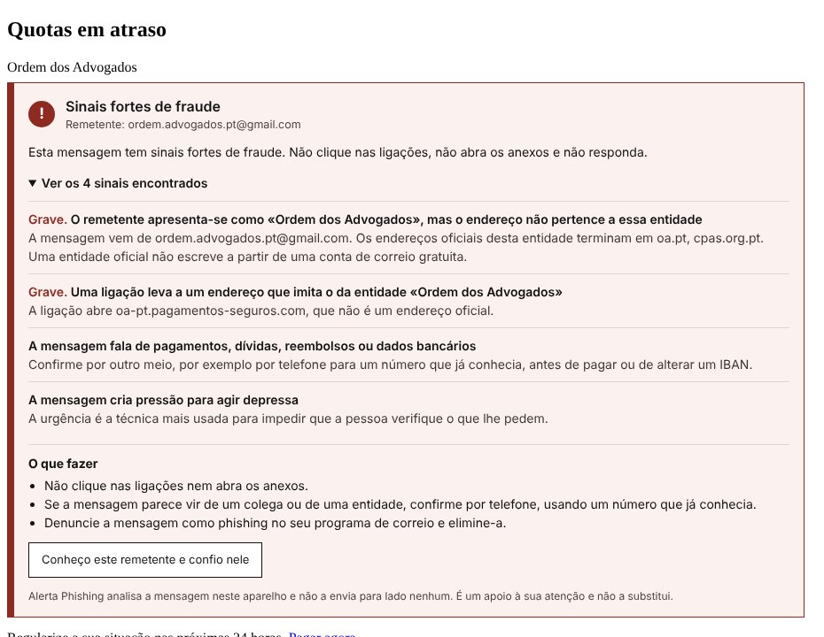
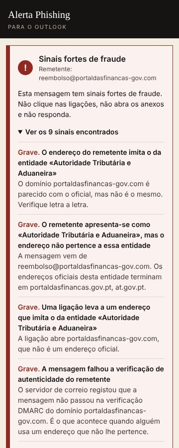

A mensagem parece da Ordem. Será?
As fraudes dirigidas a advogados usam o nome da Ordem dos Advogados, dos tribunais, da Autoridade Tributária, dos bancos e até de colegas. O Alerta Phishing verifica o que o olhar apressado não vê:
- O nome diz «Ordem dos Advogados», mas o endereço é de uma conta gratuita.
- O endereço é quase igual ao verdadeiro, com uma letra trocada.
- A ligação mostra o sítio do banco e abre outro endereço.
- A resposta seguiria para uma pessoa diferente de quem enviou.
- O anexo parece um PDF e é um programa.

O que verifica
O que não faz
O Alerta Phishing não impede que as mensagens cheguem à caixa de correio: essa decisão cabe aos filtros do Gmail e da Microsoft. Também não garante que detecta todas as fraudes. Uma mensagem enviada da conta verdadeira de um colega que foi invadida pode não apresentar nenhum sinal técnico. É um segundo par de olhos, que avisa antes do clique, e não dispensa a atenção de quem lê.
Como adquirir e começar a utilizar
130 €
Licença individual, em pagamento único. Inclui as versões para o Outlook, para o Gmail e para o webmail da Ordem dos Advogados.
- Envie mensagem a Ana Marta Soares no LinkedIn ou faça o pedido em ana-marta-soares.netlify.app. Após o pagamento, recebe o código de activação.
- Instale a versão para o seu correio, seguindo os passos abaixo.
- Cole o código de activação e seleccione Activar.
Instalação
Escolha o correio que utiliza. Cada versão tem o seu ficheiro e os seus passos.
Uso o Outlook Uso o Gmail Uso o webmail da Ordem
Se usa o Outlook
Funciona no Outlook na Web, no novo Outlook, no Outlook clássico para Windows (Microsoft 365 ou Outlook 2021 e posteriores) e no Outlook para Mac. Instala-se uma vez e fica disponível em todos os computadores em que use a mesma conta.
Descarregar para o Outlook (ficheiro .xml)
- Descarregue o ficheiro do suplemento, alerta-phishing-outlook-manifest.xml. Não é preciso abri-lo nem mudá-lo de sítio.
- Abra aka.ms/olksideload e, se lhe for pedido, inicie sessão com a sua conta de correio. Abre-se a janela dos suplementos do Outlook.
- Seleccione Os meus suplementos e, no fim da lista, em Suplementos personalizados, seleccione Adicionar um suplemento personalizado e depois Adicionar a partir de ficheiro.
- Indique o ficheiro descarregado e confirme com Instalar.
- Abra uma mensagem recebida, seleccione o botão Aplicações (no Outlook clássico, o botão Alerta Phishing do separador Base) e escolha Alerta Phishing. Cole o código de activação.
- Fixe o painel com o alfinete, no canto superior. A partir daí, o painel analisa cada mensagem que abrir.
Se usa o Gmail
É uma extensão para o Google Chrome, o Microsoft Edge e o Brave, no computador. Funciona com contas Gmail e Google Workspace.
Descarregar para o Gmail (ficheiro .zip)
- Descarregue o ficheiro alerta-phishing-gmail.zip e abra-o (duplo clique). Surge a pasta alerta-phishing-gmail. Mova-a para um local permanente, por exemplo a pasta Documentos: a extensão deixa de funcionar se a pasta for apagada.
- No browser, abra a página das extensões, escrevendo na barra de endereço chrome://extensions (no Edge, edge://extensions; no Brave, brave://extensions).
- Active o Modo de programador (no canto superior direito; no Edge, no menu da esquerda).
- Seleccione o botão que carrega uma extensão a partir de uma pasta (no Chrome, Carregar expandida; em inglês, «Load unpacked») e indique a pasta alerta-phishing-gmail.
- Abre-se a página de activação. Cole o código de activação que recebeu, que começa por AMS-, e seleccione Activar.
- Abra ou recarregue o Gmail e abra uma mensagem. O resultado da análise aparece por cima da mensagem.
Se usa o webmail da Ordem dos Advogados
Funciona no webmail da Ordem (webmail.oa.pt), com as contas @adv.oa.pt, @advogados.oa.pt e @adv-est.oa.pt. É a mesma extensão do Gmail, para o Google Chrome, o Microsoft Edge e o Brave, no computador: a instalação é uma só e serve para os dois.
Ao abrir uma mensagem, o Alerta Phishing analisa o original da mensagem, incluindo as verificações de autenticidade registadas pelo servidor de correio, e mostra o resultado por cima do texto.
Descarregar a extensão (ficheiro .zip)
- Siga os passos indicados acima para o Gmail: descarregar, abrir o ficheiro, carregar a pasta na página das extensões e activar com o código que começa por AMS-.
- Abra ou recarregue o webmail da Ordem e abra uma mensagem. O resultado da análise aparece por cima da mensagem.
- Se já tinha instalado uma versão anterior, apague a pasta antiga, descarregue de novo o ficheiro e carregue a nova pasta. O código de activação mantém-se.
No Outlook, o resultado aparece no painel lateral, com a lista dos sinais encontrados e o que fazer a seguir.

Perguntas frequentes
O Alerta Phishing impede que as mensagens fraudulentas cheguem à caixa de correio?
Não. A entrega das mensagens é decidida pelos filtros do Gmail e da Microsoft, antes de qualquer suplemento actuar. O Alerta Phishing analisa a mensagem quando a abre e avisa-o antes de clicar numa ligação, abrir um anexo ou responder.
O Alerta Phishing detecta todas as fraudes?
Não. Nenhuma ferramenta o consegue. Uma mensagem enviada da conta verdadeira de um colega que foi invadida pode não apresentar nenhum sinal técnico. O Alerta Phishing é um apoio à atenção de quem lê e não a substitui.
As minhas mensagens são enviadas para algum servidor?
Não. A análise é feita no próprio computador, pelo suplemento ou pela extensão. Nenhuma mensagem, nenhum anexo e nenhum endereço são enviados para fora dele. Não é usada inteligência artificial na nuvem.
Que sinais são verificados?
O nome e o endereço do remetente, os endereços que imitam os de entidades conhecidas, o endereço de resposta, o destino real das ligações, o tipo dos anexos, as verificações de autenticidade registadas pelo servidor de correio (SPF, DKIM e DMARC) e as expressões típicas das fraudes, como a urgência e o pedido de credenciais ou de pagamentos.
Em que programas funciona?
No Outlook na Web, no novo Outlook, no Outlook clássico para Windows (Microsoft 365 ou Outlook 2021 e posteriores) e no Outlook para Mac. No Gmail, funciona no computador, no Google Chrome, no Microsoft Edge e no Brave.
Uma mensagem legítima foi assinalada. O que faço?
Se conhece o remetente, seleccione «Conheço este remetente e confio nele». A partir daí, o nome da entidade e o endereço de resposta deixam de ser assinalados para esse endereço. Os restantes sinais continuam a ser verificados.
Quanto custa o Alerta Phishing?
A licença individual custa 130 €, em pagamento único, e inclui as versões para o Outlook e para o Gmail.